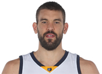
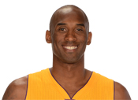
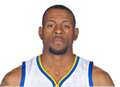
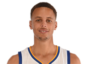
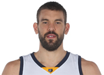
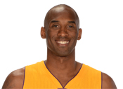
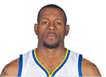
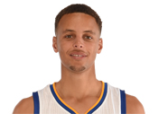

Players
Player Inguries
Lou Williams
Hamstring
Out until at least Mar 4
Blake Griffin
Broken Hand
Out until at least Mar 19
 Marc Gasol
Foot
Out for season
 Kobe Bryant
Shoulder
Out until at least Mar 2
Chris Bosh
Calf
Out until at least Mar 15
Kenneth Faried
Back
Game Time Decision
 Andre Iguodala
Hamstring
Out until at least Mar 3
Austin Rivers
Hand
Out until at least Mar 2
 Stephen Curry
Ankle
Out until at least Mar 3
Kevin Garnett
Knee
Out until at least Mar 4
"NBA Injuries." CBSSports.com. N.p., n.d. Web. 02 Mar. 2016. .
Top overall Player stats
-

Stephen Curry
Stephen Curry averages the most points in the league so far.
-

Andre Drummund
Andre Drummund averages the most rebounds in the league so far.
-

Rajon Rondo
Rajon Rondo averages the most Assists in the league so far.
-

Russell Westbrook
Russell Westbrook averages the most steals in the league so far.
Most popular Nba Players in the nba
-

1.Lebron James
-
2.Stephen Curry
-

3.Carmelo Anthony
-

4.Chris Paul
-
5.Russell Westbrook
Tweets by @NBA
| Lou Williams | Hamstring | Out until at least Mar 4 | |
| Blake Griffin | Broken Hand | Out until at least Mar 19 | |
|  | Marc Gasol | Foot | Out for season |
|  | Kobe Bryant | Shoulder | Out until at least Mar 2 |
| Chris Bosh | Calf | Out until at least Mar 15 | |
| Kenneth Faried | Back | Game Time Decision | |
|  | Andre Iguodala | Hamstring | Out until at least Mar 3 |
| Austin Rivers | Hand | Out until at least Mar 2 | |
|  | Stephen Curry | Ankle | Out until at least Mar 3 |
| Kevin Garnett | Knee | Out until at least Mar 4 |
"NBA Injuries." CBSSports.com. N.p., n.d. Web. 02 Mar. 2016.
Top overall Player stats
-
Stephen Curry
Stephen Curry averages the most points in the league so far.
-
Andre Drummund
Andre Drummund averages the most rebounds in the league so far.
-
Rajon Rondo
Rajon Rondo averages the most Assists in the league so far.
-
Russell Westbrook
Russell Westbrook averages the most steals in the league so far.
Most popular Nba Players in the nba
-
1.Lebron James
-
2.Stephen Curry
-
3.Carmelo Anthony
-
4.Chris Paul
-
5.Russell Westbrook